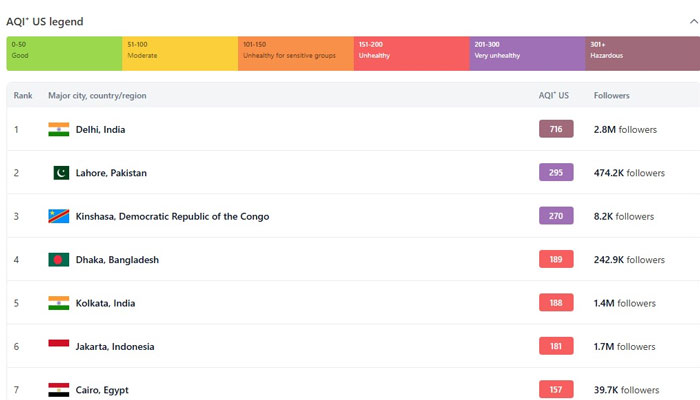

🌆 Why Lahore Needs Your Help
Lahore, Pakistan's second-largest city, is facing a severe public health crisis due to escalating air pollution and rapid urbanization. The city's population has surged to over 14.8 million in 2025, leading to increased demand for healthcare services.
Air quality in Lahore has reached hazardous levels, with AQI readings peaking at 2061 in November 2024, making it the most polluted city globally at that time. Such pollution levels pose significant health risks, including respiratory and cardiovascular diseases.
Despite the pressing need, many residents lack access to affordable healthcare. Our initiative aims to establish clinics that charge only $1 to $1.5 per visit, ensuring sustainability while providing essential medical services to those in need.
📊 Lahore AQI Visualization
🎥 The Reality of Lahore's Air Quality
Watch this video to understand the severity of air pollution in Lahore and its impact on residents' health.
📌 Where Your Funds Will Be Used
Your donations will be carefully and transparently used to improve public health access for underserved communities in Lahore. Here's how your support will make an impact:
- 🏥 Rent & Set Up Clinics: Secure clean and accessible spaces in high-need areas of Lahore and equip them with essential medical tools and furniture.
- 💊 Medical Supplies: Purchase life-saving medicines, diagnostic kits, and preventive care materials for thousands of patients.
- 👩⚕️ Staff Salaries: Pay qualified doctors and nurses to provide respectful and professional care at just $1 to $1.5 per visit.
- 🧾 Operational Costs: Ensure electricity, water, sanitation, and maintenance to keep the clinics running without interruption.
- 📣 Awareness Campaigns: Organize workshops, printed materials, and social media drives to educate families on health, pollution, and hygiene.
💚 Every single dollar makes a real, measurable difference. A $10 donation could fund checkups for 8–10 people. A $50 gift might supply a clinic with medicine for an entire week. Your generosity brings hope, healing, and dignity to those who need it most.
💚 How You Can Help
Your donation will directly contribute to setting up and maintaining these clinics. Here's how you can donate:
🏦 Bank Transfer (Wise / Your Bank)
Account Title: MUHAMMAD KAMAL TARIQ
IBAN: PK68NBPA0604004259928320
Country: PAKISTAN
City: Mirpur
Address: Mirpur Azad Kashmir
Post Code: 10250
Bank Name: National Bank of Pakistan
SWIFT Code: NBPAPKKA
Branch Code: 0604
📄 Transparency
We are committed to transparency. Regular updates on clinic operations and financial reports will be shared with all donors. Your support will make a tangible difference in the lives of Lahore's residents.